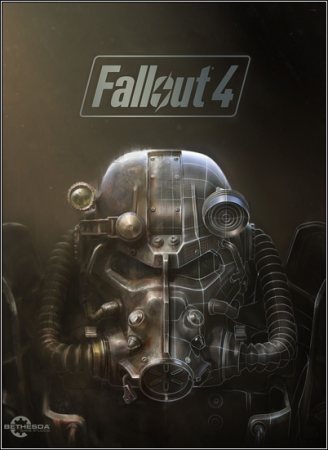

Скачать Fallout 4

| Дата |
Разраб |
Издатель |
Серия |
Платфомы |
Жанр |
| 9 ноября 2015г |
Bethesda Softworks |
Bethesda Softworks |
Fallout 4 |
PC |
Шутер |
Об игре
О игре:Долгожданное продолжение полюбившейся многим геймерам постапокалиптической игры. Действие сюжета в Fallout 4 разворачивается практически сразу же после окончания событий прошлой версии. В Убежище 111 удалось выжить только одному человеку. Главный персонаж не может и дальше оставаться в этом месте, дожидаясь помощи. Ему придется покинуть стены дома, где он родился и вырос, чтобы отправиться в далекое путешествие по пустошам. После того, как персонаж выйдет из своего Убежища, он поймет, что остался не единственным выжившим на планете. С недавнего времени многомиллионные города населяют полчища кровожадных мутантов и армии рейдеров, которые охотятся на случайных путников.
В отличие от прошлых частей, основные события в Fallout 4 происходят в Бостоне. Поклонники данной серии могут отметить существенные изменения, которые произошли в игровой механике. Новыми умениями обзавелся и сам персонаж. Теперь он способен самостоятельно модифицировать найденное оружие и строить дома, которые разрушились во время военных действий. Героя ждут нелегкие испытания. Большая часть из них теперь не требует необходимости сражаться с другими персонажами, чтобы успешно выполнить их.
Системные требования:
✔ Операционная система: Windows 7 / 8 / 10 (64-бит)
✔ Процессор: Intel Core i5-2300 / AMD Phenom II X4 945 | 2.8 GHz
✔ Оперативная память: 8 GB RAM
✔ Видеокарта: NVIDIA GTX 550 Ti / AMD Radeon HD 7870 | 2 GB RAM
✔ Звуковая карта: Звуковое устройство, совместимое с DirectX® 9.0с
✔ Свободное место на жестком диске: 35 GB
Особенности игры:
- Вы можете делать что угодно – в огромном открытом мире вас ждут сотни локаций, персонажей и заданий. Заключайте союзы с разными фракциями или добивайтесь всего самостоятельно – все в ваших руках.
- Станьте кем хотите с помощью системы персонажей S.P.E.C.I.A.L. Выберите из сотен качеств и создайте любого героя – от солдата в силовой броне до обаятельного переговорщика.
- Мир Fallout оживает благодаря графике нового поколения и современному движку. Сожженные леса Содружества, руины Бостона – все воспроизведено убедительно и с потрясающими подробностями.
- Напряженные схватки от первого или третьего лица можно замедлить в новой системе пошагового прицеливания "Волт-Тек" (V.A.T.S), которая позволит выбрать способ атаки и насладиться кинематографической сценой бойни.
- Собирайте, улучшайте и создавайте тысячи предметов с помощью продвинутой системы изготовления. Оружие, броня, химикаты и еда – вот только начало списка, впоследствии вы сможете создавать и развивать целые поселения.>